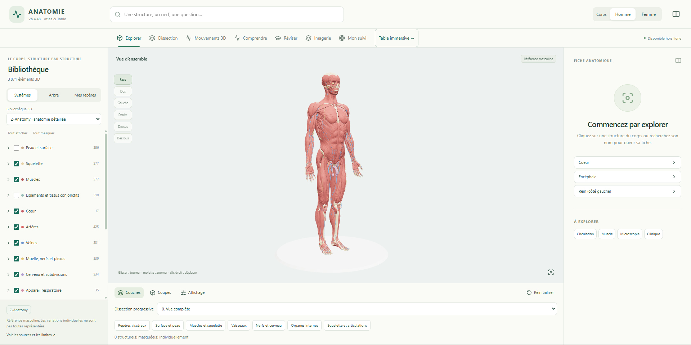
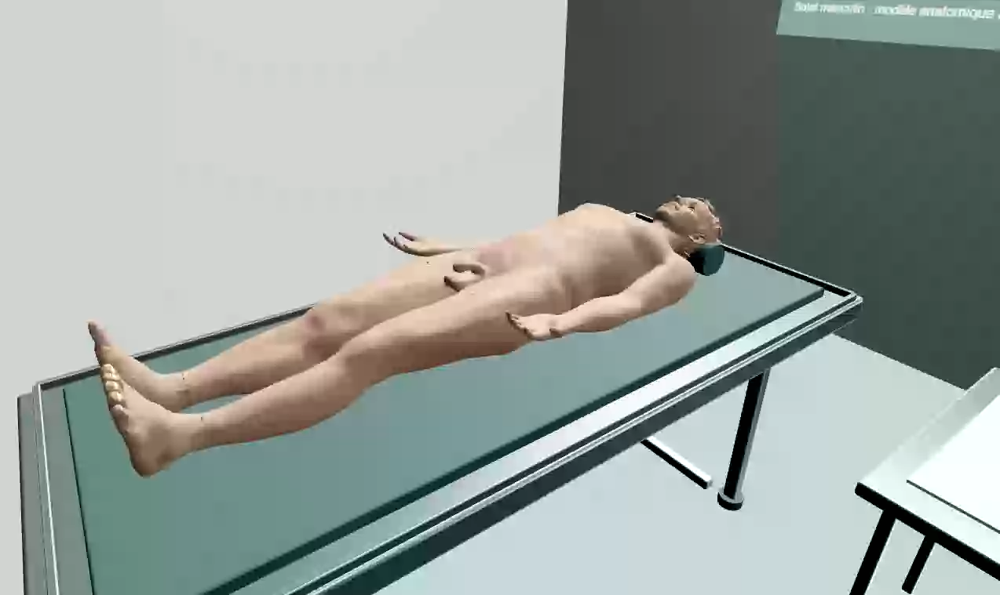
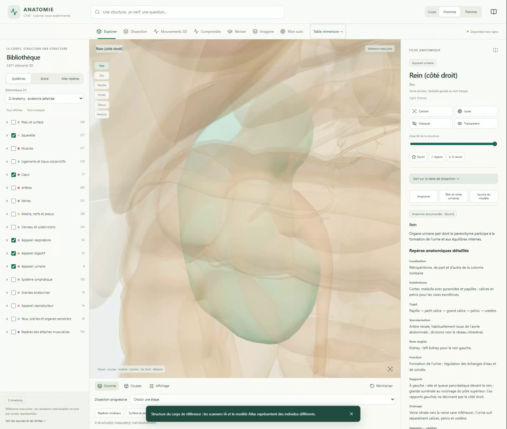

Retrouver une structure
Recherche par nom, arbre anatomique, rotation, zoom et sélection directe dans le corps 3D.
Une même structure peut être retrouvée par son système ou par son nom.
Anatomie · pédagogie · ingénierie
Un projet local qui relie un atlas humain en 3D, des outils de révision et une chaîne expérimentale d’analyse de scanners.
Tourner autour d’un organe, consulter sa fiche, tester ses connaissances, examiner des couches ou retrouver une segmentation dans les coupes : plusieurs façons d’étudier réunies dans un même environnement.
Cette page présente des fonctions implémentées et des preuves conservées. L’application reste un prototype pédagogique, sans validation clinique.

L’application, au-delà de l’IA
Le cœur du projet est l’Atlas. Le module IA le complète ; il ne résume pas tout le travail réalisé.
Recherche par nom, arbre anatomique, rotation, zoom et sélection directe dans le corps 3D.
Une même structure peut être retrouvée par son système ou par son nom.
Afficher les couches, masquer des systèmes, isoler un élément, régler sa transparence et utiliser des plans de coupe.
Une coupe de visualisation et une incision du prototype sont deux outils différents.
Fiches avec noms disponibles, repères, relations anatomiques et références. Accès aux structures voisines et aux modules associés.
La documentation est inégale : une fiche de groupe ne valide pas chaque sous-structure.
Modules explicatifs : neurone, synapse, néphron, filtration, œil, oreille et péristaltisme.
Ce sont des représentations pédagogiques simplifiées, pas une microscopie réelle.
Animations articulaires et respiratoires, contrôle de la lecture et parcours de certains trajets nerveux.
Mouvements illustratifs ; les trajets animés et la biomécanique restent à améliorer.
Identifier une structure, la retrouver sur le corps, répondre à un QCM, consulter sa correction et filtrer la séance.
Favoris, éléments appris ou à revoir, suivi et export de supports sont présents dans l’interface.
L’origine du projet
Le projet a commencé par un outil de révision destiné à une étudiante en médecine à Angers, puis s’est étendu à l’exploration anatomique.
Le bouton de l’application QCM ouvre l’Atlas comme module distinct. QCM local prépare ses questions avec Ollama sur la machine, à partir de supports que l’utilisateur est autorisé à importer.
Cette branche d’origine est distincte du snapshot de sources Atlas actuellement sauvegardé sur GitHub.
Documents textuels ou PDF exploitables ; sélection d’un chapitre et des sous-parties à travailler.
Nombre, difficulté, type de réponse et option photos. Historique utilisé pour varier les passages et écarter des questions répétées.
Correction, passage cité, lignes du texte importé et page quand cette information a été conservée.
Bilan des réponses et des points repérés par sous-partie. Le repérage automatique n’est pas une preuve de couverture exhaustive du cours.
La table de dissection
Une approche continue du bras, puis les gestes réels : scalpel, décollement à la sonde, traction et maintien des tissus, petite incision du biceps.

Les couches sont exposées par les outils avant l’incision du vrai maillage source du biceps gauche. La sonde agit sur le tissu visible. Les écarteurs restent attachés à des bords incisés.
Les replis restent stylisés et les instruments n’ont pas encore une collision physique complète. Le modèle source garde certains reliefs et raccords visibles. Cette capture ne valide ni le réalisme anatomique, ni une dissection libre de tout le corps.
Annulation, rétablissement et sauvegarde/reprise ont été vérifiés sur cette séance. C173 reste la référence fonctionnelle ; la version stable n’est pas remplacée.
Le chantier du sang reste suspendu.
Repérer les organes dans un scanner
On part d’un scanner CT enregistré dans un fichier NIfTI. Il contient un volume : une pile de nombreuses images 2D, avec leur taille et leur position dans l’espace. Chaque petit élément de ce volume est un voxel, l’équivalent d’un pixel en 3D.
Dans les données publiques d’apprentissage, des annotations indiquent où se trouvent la rate ou les reins. Les réseaux commencent avec des poids aléatoires, puis ajustent leurs paramètres en comparant leurs prédictions à ces annotations. Un modèle apprend la rate ; un autre apprend les reins droit et gauche.
Le corps de référence utilise des maillages adaptés et crédités. Cette bibliothèque est distincte des surfaces prédites à partir d’un scanner ; les réseaux entraînés ici ne la génèrent pas.
Après l’entraînement, le réseau prédit où se trouve l’organe dans un CT. La prédiction devient un masque binaire : pour chaque voxel, la valeur indique s’il est attribué à l’organe ou non. La frontière de ce masque sert à reconstruire la surface 3D.
Le masque est remis sur la grille du scanner d’origine. La surface conserve la taille et les coordonnées de cet examen ; elle n’est pas automatiquement alignée sur le corps anatomique de référence.
Choisissez une coupe pour l’agrandir. Il s’agit ici d’un scanner CT, avec ses coupes sagittale, coronale et axiale.
Les vues recadrées reprennent le même résultat public TotalSegmentator déjà examiné dans C182. Les erreurs et fragments restent conservés. Aucune nouvelle inférence n’a été lancée pour cette présentation.
Voir la démonstration complète avec ouverture de la fiche ↗
Deux séries d’expériences distinctes
Les expériences portent sur la rate et les reins droit et gauche. Les tableaux comparent plusieurs versions des réseaux à des annotations de référence. La validation sert à choisir les versions pendant le développement ; l’évaluation externe utilise des CT d’une autre source que celle de l’apprentissage pour vérifier si les résultats se maintiennent.
Rate · C176 à C180
Les CT annotés viennent du jeu public Medical Segmentation Decathlon (MSD). C176 compare deux U-Net lisant une coupe 2D à la fois, avec ou sans variations des images pendant l’entraînement. C177 lit trois coupes voisines ensemble (2,5D). Le jeu MSD est réparti en 27 cas d’apprentissage, 7 de validation et 7 de test interne.
Les cas de validation servent à choisir la version enregistrée du réseau. C177 a été choisi sur ces mêmes cas déjà consultés ; le test interne reste séparé de ce choix.
| Modèle | Dice ↑ | HD95 ↓ |
|---|---|---|
| C176 2D retenu | 0,951 | 11,68 mm |
| C177 2,5D | 0,958 | 2,77 mm |
| Modèle | Dice ↑ | HD95 ↓ |
|---|---|---|
| C176 | 0,771 | 24,99 mm |
| C177 | 0,809 | 37,41 mm |
Meilleur recouvrement moyen, mais erreur de contour moyenne plus grande. Sur 30 CT sélectionnés, une tentative C177 interrompue est conservée : 29 paires, sans remplacement du cas.
Le pire Dice C177 externe est 0,105 et son HD95 maximal atteint 307,78 mm. Les groupes observables ne certifient pas 30 identités indépendantes.
Reins · C181 à C185
C181 est un U-Net 2D : il lit une coupe à la fois et produit une prédiction séparée pour chaque rein. C184 est un candidat 2,5D, utilisant des coupes voisines. Ses résultats moins bons sont conservés ; il ne remplace pas C181.
L’entraînement C181 utilise 24 volumes CT du jeu public AMOS, et sa validation en utilise 6. Les identités indépendantes ne sont pas certifiées. L’évaluation externe C182 sur une autre source montre des résultats insuffisants.
| Côté / modèle | Dice ↑ | HD95 ↓ |
|---|---|---|
| Droit · C181 | 0,745 | 71,23 mm |
| Droit · C184 | 0,701 | 204,11 mm |
| Gauche · C181 | 0,642 | 55,38 mm |
| Gauche · C184 | 0,634 | 123,92 mm |
Moyennes primaires sur 26 références non vides à droite et 27 à gauche. Les 4 références vides à droite et 3 à gauche sont décrites séparément. Aucune certification de 30 patients indépendants.
Les 60 prédictions ont abouti ; la qualité se dégrade néanmoins. C184 n’est pas promu. Le plus grand HD95 droit atteint 513,67 mm.
Lire le bilan détaillé et les limites ↗Dice / IoU : recouvrement avec l’annotation ; plus proche de 1 est préférable.
HD95 : distance entre contours, en millimètres ; plus faible est préférable. Il met en évidence des erreurs qu’un Dice moyen peut cacher.
Seeds, configurations, pertes, hyperparamètres, checkpoints et métriques sont enregistrés. Les modèles, seuils et prétraitements sont figés avant l’évaluation externe.
Les cohortes sont auditées avant les prédictions. Les exclusions, interruptions, références vides et limites de couverture sont conservées ; les identités non certifiées sont signalées.
Les poids, CT bruts, annotations et imports privés ne sont pas publiés ici. Cette vitrine montre les bilans et des captures d’une source publique avec attribution.
Le travail logiciel derrière les images
Retour sur la grille native, coordonnées physiques, latéralité et parité des exports. Les deux côtés partagent un CT au lieu de le convertir deux fois.
État de tâche, annulation, verrou de worker, sauvegarde et reprise d’un résultat. Les contrôles logiciels sont distincts de l’évaluation du modèle.
Dans C182, l’inférence moyenne prend environ 1,44 s ; prédiction et export prennent 40,40 s. Rééchantillonnage et reconstruction coûtent aussi du temps.
29 cas, même benchmark ; chargement initial du modèle exclu. Scoring avec annotation inclus : 48,17 s. Ce ne sont pas des performances universelles.
Application : React · TypeScript · Three.js / Traitement : Python · PyTorch · NIfTI / Révision QCM : moteur local Ollama
État du projet · bilan C185
La version stable reste distincte des candidats expérimentaux. Le snapshot privé sauvegardé couvre l’Atlas C183 et les sources rénales C181/C184/C185 ; il ne constitue pas encore une archive complète de QCM local et de toutes les campagnes de rate.